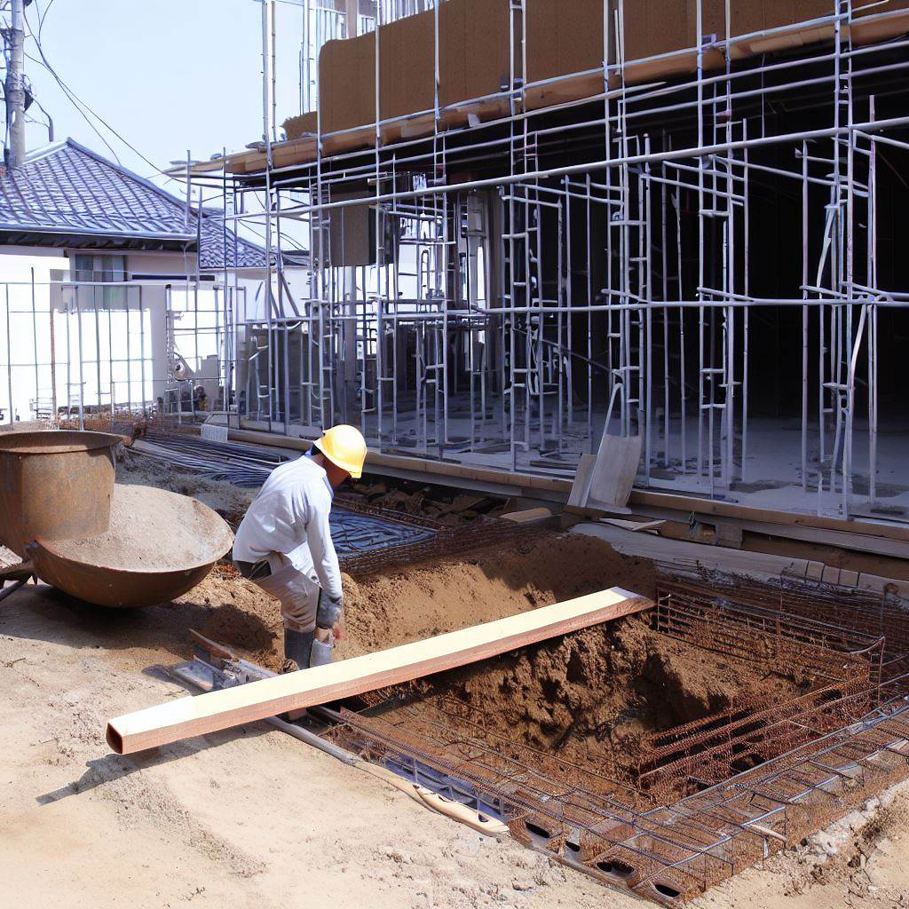
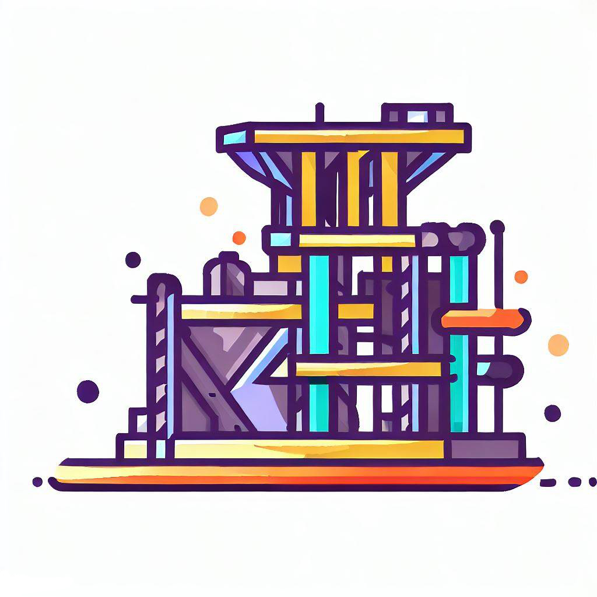
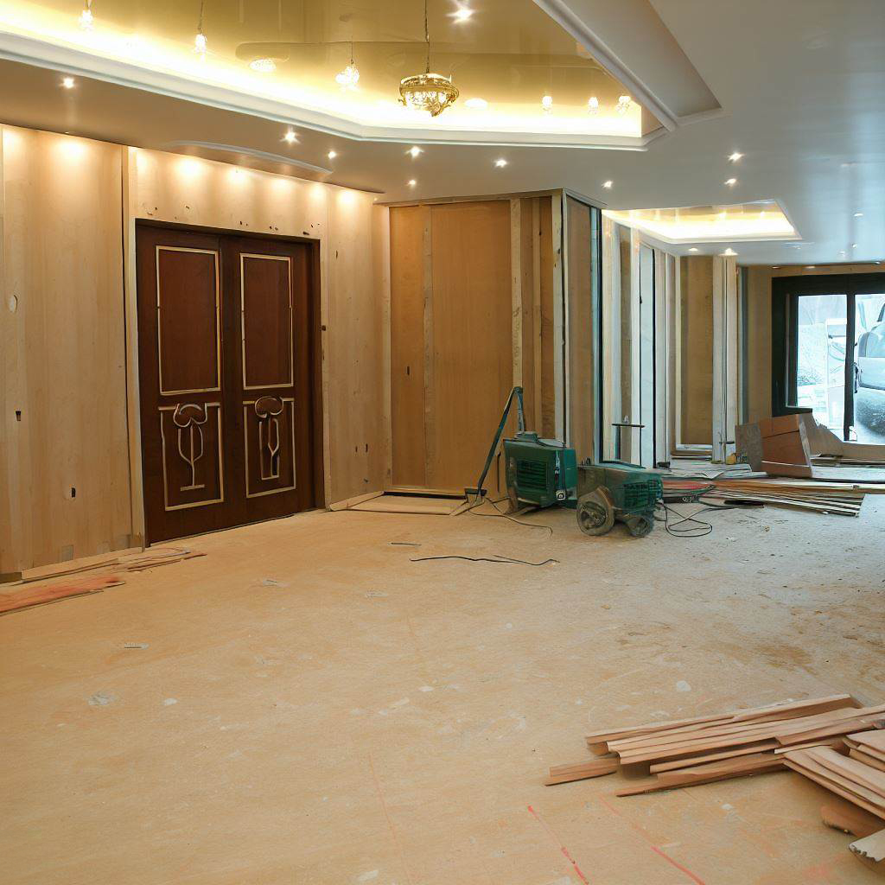

Первым этапом строительства здания является планирование и проектирование. Здесь определяются требования к зданию, составляются архитектурные и конструктивные проекты, проводятся инженерные расчеты и разрабатывается документация для строительства.
На этом этапе проводятся работы по подготовке строительной площадки. Включает в себя очистку и выравнивание участка, подготовку временных коммуникаций и разметку строительной площадки.

Этот этап включает в себя непосредственное строительство здания. Он включает в себя такие работы, как возведение фундамента, строительство несущих конструкций, установка кровли и окон, проведение внутренних инженерных систем и отделочные работы.

На последнем этапе проводятся завершающие работы, включающие установку дверей, укладку полов, покраску, установку сантехнических приборов, электрических розеток и освещения. Также проводится проверка и испытание всех систем здания перед его сдачей.

После завершения строительства здание сдается заказчику или эксплуатирующей организации. Начинается период эксплуатации, который включает в себя обслуживание, ремонт и обновление здания в течение его жизненного цикла.